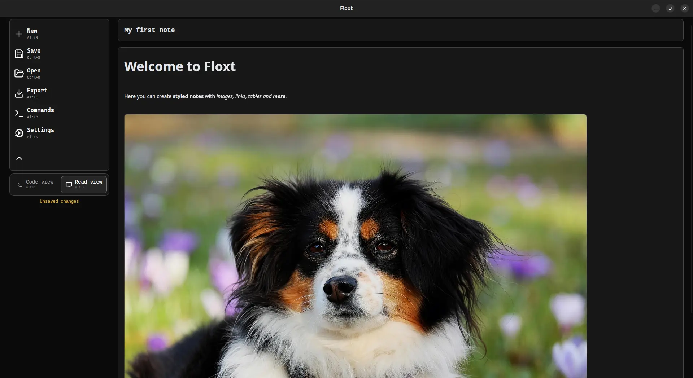
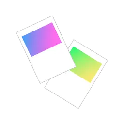
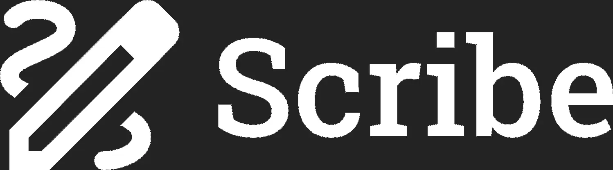

HUBERT DOLIŃSKI
PORTFOLIO
Floxt

Made with
Next.js • Rust • Tauri
Description
Desktop web app for creating notes in an original formatting syntax with advanced functionalities: text formatting, editor automatic code completion, adding links and images, line numbering, file statistics and much more.

Postcards

Made with
Expo - React Native
Description
Mobile app simulating a pinboard, to which user can attach notes, to-do lists and images. Extensive system for aligning pins by sliding and resizing them.
Scribe

Made with
Next.js • Docker • Google Firebase
Description
Web app for creating notes and to-do lists in teams. Authentication with user accounts.